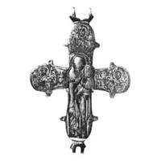

Catalog › CE-1039 · KOR2003-III.1.1.65
Valvă de revers cu Maica Domnului Odighitria în relief și Nicolae, Pavel, Petru în niello
sec. XII (1101–1200) · loc necunoscut · Muzeul de Istorie de Stat, Moscova (GIM), secția de arheologie, inv. № 2972ш, оп. 1980/В1
single valve of a reliquary cross, aramă; c. XII (1101–1200); find spot unknown; kept at Muzeul de Istorie de Stat, Moscova (GIM), secția de arheologie.


Identificare
- Categorie
- Valvă izolată
- Material
- Aramă
- Tehnică
- Turnare în relief; Gravare (incizie); Niello
- Dimensiuni
- Î 80 × L 70 mm
Iconografie
- Revers
- Maica Domnului cu Pruncul; Sf. Nicolae; Sf. Petru; Neidentificat
- Descriere revers
- Valvă de revers cu margini rotunjite. Pe latura interioară se vede adâncitura care repetă conturul imaginii centrale reliefate. În centru imaginea reliefată a Maicii Domnului Odighitria; în trei medalioane imagini în niello ale sfinților Nicolae, Pavel și Petru (niello pierdut pe alocuri). Marginea crucii este subliniată cu o crestătură oblică turnată.
- Inscripții
- IC XC/МР ΘҮ; ННК ЛА; ПАВЛ; ПЕТРЪ
- Limba
- Slavonă
Datare și atribuire
- Datare
- sec. XII (1101–1200)
- Centru
- Necunoscut
- Tipologie
- Korzukhina–Peskova 2003, tip III 1 1
Descoperire
- Context
- Colecție (fără context)
Păstrare și referințe
- Colecție
- Muzeul de Istorie de Stat, Moscova (GIM), secția de arheologie
- Nr. inventar
- № 2972ш, оп. 1980/В1
- Bibliografie
- G. F. Korzukhina, A. A. Peskova, Древнерусские энколпионы. Нагрудные кресты-реликварии XI–XIII вв., Sankt-Petersburg, 2003 [Korzukhina–Peskova 2003], p. 108, cat. nr. III 1 1/65, reprodusă la Табл. 51 (planșe, p. 293).
- Figura
- Табл. 51
- Planșe
- Korzukhina–Peskova 2003, Табл. 51 (planșă fără paginație proprie în PDF; p. 293 tipărită)
- Observații
- Datare după Peskova: sec. XII. Inscripții turnate, adâncite, în încrucișare de o parte și de alta a figurii Maicii Domnului; în medalioane НН К ЛА, ПАВЛ, ПЕТРЪ. Credit: N. I. Astașova, foto GIM. Inscripții mixte: formule grecești și nume slavone, unele stilizate sau stricate. Coordonate: nu sunt date în sursă.
Citare: Corpus Encolpiorum, CE-1039, Valvă de revers cu Maica Domnului Odighitria în relief și Nicolae, Pavel, Petru în niello, https://vitaliejosanu1979-ux.github.io/primul-meu-proiect/piese/KOR2003-III.1.1.65/ (accesat 2026-10-17).